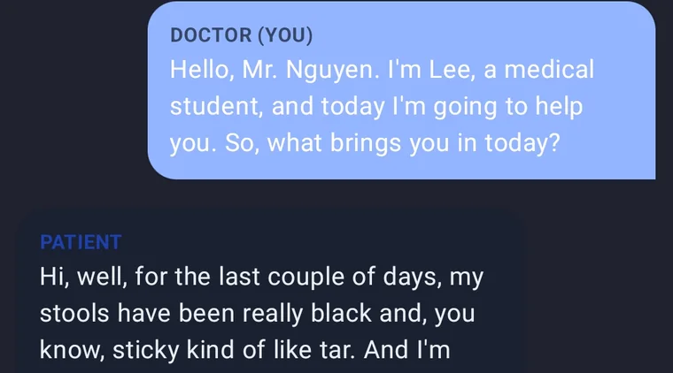
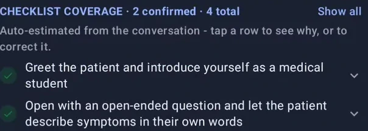
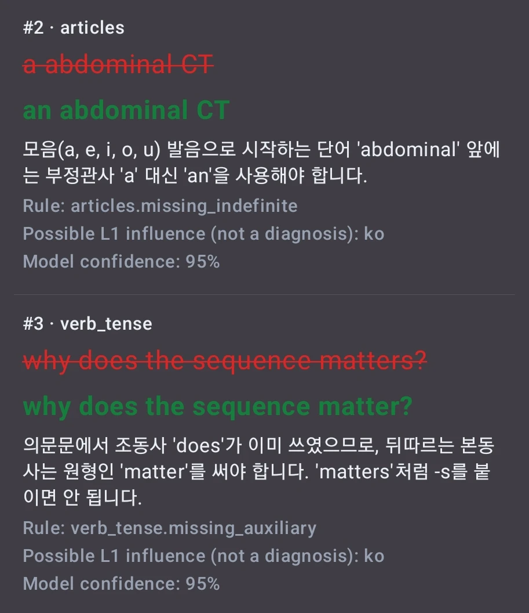
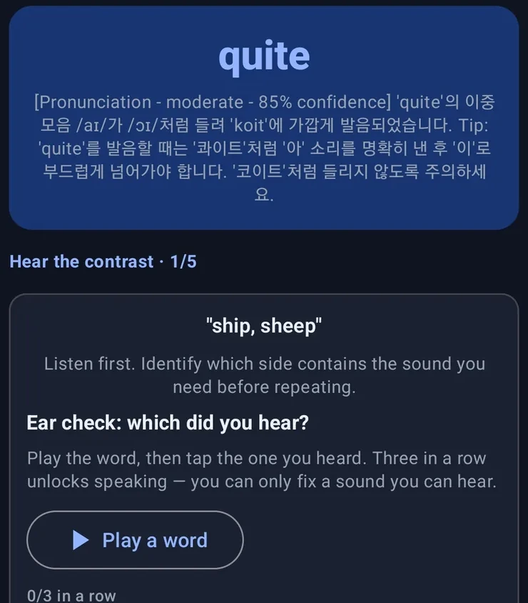

Take the history out loud.The patient answers.
Ask an AI patient in your own words and hear the reply. The checklist fills in from what you actually asked, and your mistakes come back as tomorrow’s speaking drill.
Free · No subscription · No account
Talk over the patient. It listens.
Interrupt, rephrase, ask again. It is an unscripted live voice conversation, not a chat that waits for its turn.

The checklist fills in from your own words.
Items are ticked from what you actually asked, not from a form you filled in. If you dry up, a question idea and the Open Book are one tap away.

Not “good job.” What to fix first, and why.
Every slip comes back as what you said, what to say, and why, explained in your own language with the rule behind it. Naturalness, interaction, comprehension and fluency are each scored from what you really said.

You can only fix a sound you can hear.
Say “quite” so it lands closer to “koit” and the app hears it. It becomes a minimal-pair drill, and you have to pick out the sound three times in a row before you are asked to say it.

Say it again tomorrow, in a new scene.
Each correction becomes a spaced card, but not one you flip and nod at.
- Your corrected sentence is saved.
- The next day, it returns in a new situation.
- You say it out loud to pass.
Not only history-taking.
Everyday English
Scenes move, time jumps and new people arrive. Run an errand, remember what you were told, and report it back, with the same live voice and feedback.
Explore Everyday modePhysical exam atlas
After the history comes the examination. Each technique step by step, what the findings mean, and how to explain them to the patient.
Open the atlasFree learning library
Free. No subscription, no account, no ads.
Live AI practice runs on your own Gemini Free Tier key, created with your Google account. No credit card or billing setup. The app is open source, and your sessions stay on your device.
Is the Free Tier really free? →Why do I bring my own Gemini key?
Because it keeps the app subscription-free. Create a Gemini Free Tier key with your Google account — no credit card or billing setup required. You only add payment details if you later choose the Paid Tier. Every practice session shown here stayed on the Free Tier, with $0 charged, and the key stays encrypted on your phone.
Is the Free Tier actually free?
Yes — $0, no credit card required. There's a fair trade-off worth knowing: Google may use your free-tier prompts and responses to improve its products, and real rate limits apply, resetting on a fixed clock time rather than a countdown. See exactly how it works, sourced to Google's own docs →
Where do my recordings and transcripts go?
Your session history is stored on your device. When an AI feature needs it, the required audio, text, and exercise context go directly to Google under your own key — not through a Bedside English account or practice server. There are no ads. Anonymous usage statistics never include your practice content, and you can turn them off in Preferences → Data & privacy.
Is this a medical device?
No. It is an English-speaking practice tool. The clinical checklists exist to give the conversation a shape, not to teach medicine or support any real clinical decision.
Next time, let the English come out first.
Free on Android and in your browser. No account needed.